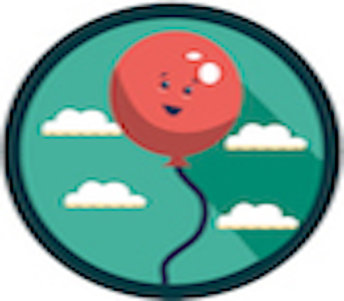

Teresa Miller and I created Lifty++ at Hack Cooper at the Cooper Union in New York City.

We submitted our hack under the #HackHarassment catergory. #HackHarassment is an organization that aims to reduce online harassment. We agree with them that building tools to block vicious content will lower online harassment or bullying.
We created a sentiment analysis tool that would assist users in determining whether or not what they wanted to post in the Internet may constitute as harassments. Some people may just not be aware about the language they are using given the context of the situation and we just want to let people know that kindness always comes first! Our code would then be made available through a Google extension, in which people could enable for free to double-check their words before posting.
I was in charge of developing the scoring algorithm, while Teresa worked on code for the extension. I'll speak to the former. We used Python to develop the algorithm that would calculate the sentiment score of each word, and eventually everything written in the text. Negative words received a score of -1 while positive words received a score of 1. Neutral words were disregarded and assigned to a score of 0. We summed up the values associated with each word and calculated the percentages for each category by dividing against this total. We used the NLTK library to tokenize each word.
We did not finish our hack, but I really hope to bring it to life someday!